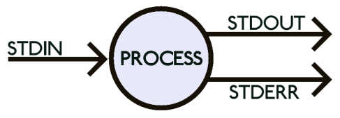
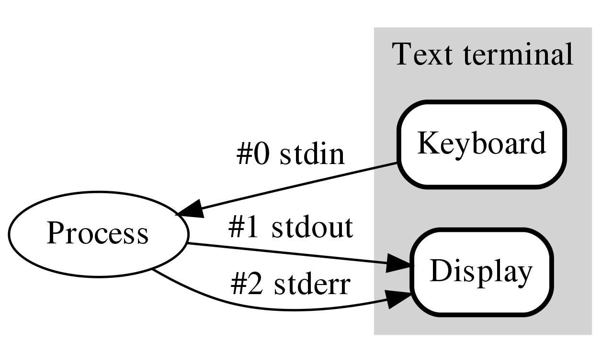
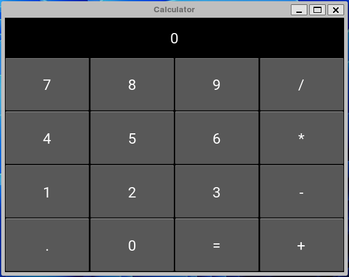

Preliminary notions for Software Development
Software Engineering
(for Intelligent Distributed Systems)
Module “Principles and Methods”
A.Y. 2023/2024
Giovanni Ciatto
Compiled on: 2024-02-17 — printable version
Motivation and goals
-
In order to put everybody on the same page…
-
… we are going to recall some basic notions and technical aspects related to software development, namely:
- the command line
- the anatomy of a software project in Python
- the role of modelling in SE
- ubiquitous (w.r.t. SE) notions such as interfaces and runtimes
-
plus, we will provide practical examples about key concepts such as
- automated testing
- deployment, packaging, and release
- maintenance
The command-line
(a.k.a. the shell, the terminal, the console)
First contact with the terminal
- Open your terminal application
- Either “PowerShell”, “Command Prompt”, “Terminal” on Windows
- “iTerm” or “Terminal” on macOS
- “Konsole” or “Terminal” on Linux
The terminal is a text-based interface to the operative system (OS). Each terminal application is executing a shell program
The shell is a program that has a simple job: REPL (Read, Evaluate, Print, Loop)
- it reads a command from the user
- it evaluates the command
- it prints the result
- it loops back to step 1, unless the user explicitly asks to exit
- Write a few simple commands and observe the effect
ls(ordiron Windows): should list the files in the current directoryecho "Hello World": should print “Hello World” on the screenexit: should close the shell (and the terminal application, if it’s the only shell)
Why the terminal?
Mostly, to look hacker-ish in the eyes of normal people 😎
(just kidding)
-
The terminal is a powerful tool for software development
-
It allows developers to interact with the OS in a precise, minimal, and efficient way
-
Most operations in software development can, and often should, be performed from the terminal
The terminal may accept commands:
- interactively, from the user
- from a script, which is a file containing commands to be executed by a shell
Developers are inherently lazy
Developers’ mindset:
If a person can do it manually via the shell, then a script can do it automatically
If a script can do it automatically, then that’s the way of doing it
- these are the basic principles behind automation
- a part from time-saving and precision in execution, automation enables reproducibility of the process
- experts can distill their operational knowledge into scripts
- scripts can be called by non-experts
To automate or not to automate?
Beware, ‘cause scripts are software too, and they require engineering:

There is an implict trade-off between
- the time spent to automate a task
- and the time saved by producing the automation code
This is not really the case of everyday programming tasks, but let’s keep this in mind
Why the terminal in this course?
-
We are going to use the terminal for:
- running Python scripts
- managing Python projects (version tracking, tests, releases, etc.)
-
Understaing how to do stuff via the terminal is a reusable skill
- while IDE and GUIs evolve quickly, and every team has its own preferences…
- command line tools are very stable and widely adopted
-
We encourage you to read the following lectures from The MIT’s “Missing Semester of Your CS Education”:
Stuff you need to know about the shell (pt. 1)
- There exist essentially two sorts of shells:
- the Unix-like shells (e.g.,
bash,zsh,fish,ksh,csh,tcsh, etc.) used by Linux and macOS- and, to some extent, by Windows
- the Windows shells (e.g.,
cmd,PowerShell) which are different from the Unix-like ones, and from each other
- the Unix-like shells (e.g.,
Whenever working with the terminal, first thing to do is to understand which shell you are using
- if you’re on Linux, you’re probably using
bashorzsh- if you’re on macOS, you’re probably using
zshorbash- if you’re on Windows, you’re probably using
cmdif you opened the Command Prompt applicationPowerShellis you opened the PowerShell applicationbashif are using the Windows Subsystem for Linux (WSL) or Git Bash
Stuff you need to know about the shell (pt. 2)
-
Whenver you open a shell, the shell is “in” a directory, which is called the current working directory (CWD)
- by default, commands operate on the CWD (i.e. they read and write files in the CWD)
-
If one wants to operate on a file in a different directory…
-
… one has to change the CWD
- this is done via the
cdcommand (change directory)
- this is done via the
-
… without changing the CWD, one has to specify the path to the file
- this is done via the absolute or relative path to the file
-
Stuff you need to know about the shell (pt. 3)
A path is a string that represents the location of a file or a directory in the file system
Beware: path-separator is different among Windows (
\) and other OS (/),and we only use
/in the slides
-
A relative path is a path that is relative to the CWD
- e.g.,
./file.txtrefers to a file namedfile.txtin the CWD - e.g.,
../file.txtrefers to a file namedfile.txtin the parent directory of the CWD - e.g.,
./dir/file.txtrefers to a file namedfile.txtin a sub-directory of CWD, nameddir
- e.g.,
-
An absolute path is a path that starts from the root of the file system
- on Unix-like systems, the root is
/- e.g.
/home/giovanni/file.txtrefers to a file namedfile.txtingiovanni’s home directory on Linux - e.g.
/Users/giovanni/file.txtrefers to a file namedfile.txtingiovanni’s home directory on macOS
- e.g.
- on Windows, there are several roots, one per drive (e.g.,
C:,D:, etc.)- e.g.
C:\Users\giovanni\file.txtrefers filefile.txtingiovanni’s home directory, on driveC: - e.g.
D:\Data\Photos\profile.jpgrefers fileprofile.jpgin theData\Photosdirectory, on driveD:
- e.g.
- on Unix-like systems, the root is
Terminal cheat sheet
| Operation | *nix | win |
|---|---|---|
| Print the current directory location | pwd |
echo %cd% |
Remove the file foo (does not work with directories) |
rm foo |
del foo |
Remove directory bar |
rm -r bar |
del bar |
Change disk (e.g., switch to D:) |
n.a., single root (/) |
D: |
Move to the subdirectory baz |
cd baz |
cd baz |
| Move to the parent directory | cd .. |
cd.. |
Move (rename) file foo to baz |
mv foo baz |
move foo baz |
Copy file foo to baz |
cp foo baz |
copy foo baz |
Create a directory named bar |
mkdir bar |
md bar |
Stuff you need to know about the shell (pt. 4)
-
Most commands have arguments
- roughly, whatever you can write after the command name is an argument
-
If you think of commands as functions, then arguments are the parameters of the function
- and the command is the function name
- and the printed output is the return value
- simply, no parentheses are required by default for “invoking” the function
-
Consider the
lscommandlslists the files in the CWD, as an inline listls -llists the files in the CWD, as a detailed listls -l /path/to/dirlists the files in the/path/to/dirdirectory, as a detailed list
How the hell can I memorise all these commands?
You should not.
-
Just try to grasp the basic idea of how shell works
-
You will eventually memorise the syntax of most frequent commands
-
For the rest, you can always look up the documentation
-
Most commands support asking for help when one does not remeber the syntax
- e.g.
COMMAND_NAME --helporCOMMAND_NAME -hmostly used on Unix-like systems - e.g.
man COMMAND_NAMEmostly used on Unix-like systems (man is for “manual”) - e.g.
COMMAND_NAME /?mostly used on Windows - e.g.
Get-Help COMMAND_NAMEmostly used on Windows
- e.g.
Do not waste your memory, learn how to look up the documentation instead
About interactive commands (pt. 1)
-
Some commands are interactive
- when you start them, they to not terminate immediately
- instead, they wait for user input
-
In this case we say that the command is just starting a process
- “process” is a technical term for a program that is running
- an app is commonly a process attached to a graphical user interace (GUI) shown on the screen
-
There is no difference among interactive and non-interactive processes, for the shell
- a command is used to start the process
- the command will stay alive,
- and possibly consume the user’s input
- and possibly produce some output
- for some reason, the process may eventually terminate
- e.g., because of some input from the user, some error, or some condition met
- when that the case, control is returned to the shell
- which will ask for more commands, as usual
About interactive commands (pt. 2)
-
Upon termination, each command returns a status code (i.e. a non-negative integer)
0means “everything went fine”- any other number means “something went wrong” (each number is a different error code)
- so the shell always knows if the last command was successful or not
-
When using the shell interactively:
- pay attention to whether the last command you wrote was successful or not
-
When programmin the shell in a script:
- you can check the status code of the last command via the special variable
$? - you can use the
ifstatement to check the status code and act accordingly
- you can check the status code of the last command via the special variable
About interactive processes (pt. 1)
In the eyes of the OS, any process can be modelled as follows:

-
i.e. a black box
- consuming a stream of input data from the standard input channel (
stdin) - producing a stream of output data to the standard output channel (
stdout) - and, possibly, producing a stream of error data to the standard error stream (
stderr)
- consuming a stream of input data from the standard input channel (
-
more channeles may be opened by the process, e.g. when reading / writing files
a stream is an unlimited sequence of bytes (or characters)
- this may represent anything having a digital representation (e.g. a file, a network connection, a device, etc.)
About interactive processes (pt. 2)
Most commonly, for interactive processes, the situation is as follows:
- all three streams are connected to the terminal by default
- so the process reads input from the keyboard
- and writes output to the terminal
- and writes errors to the terminal (sometimes, errors are colored differently)
About interactive processes (pt. 3)
Example: the nano command
nanois a simple, interactive, text editor for the terminal
-
Open a shell, and run the following command
nano myfile.txt -
This should transform the terminal into a text editor, editing the file
myfile.txt- you can write some text in there, e.g.
Hello World
- you can write some text in there, e.g.
-
Then, press Ctrl+O to save the file
- you will be asked to confirm the file name, press Enter
-
Then, press Ctrl+X to exit the editor
-
You should be back to the shell, and the file
myfile.txtshould have been created- you can verify that, via the
lscommand
- you can verify that, via the
The Python command
-
Python is a programming language, namely, the reference programming language we use in the course
-
We will operate Python stuff via the terminal, using the
pythoncommand -
The command’s behaviour is very different depending on which and how many arguments are passed:
pythonwith no arguments starts an interactive Python shell- i.e. yet another shell, but using the Python syntax
python FILENAMEstarts a Python process that executes the Python code in the fileFILENAMEpython -m MODULEstarts a Python process that executes the module namedMODULE- we’ll see what a module is, later in the course
python -c "CODE"starts a Python process that executes the Python code in the string"CODE"- e.g.
python -c "print('Hello World')"
- e.g.
-
Use
python --helpto inspect the help of thepythoncommand, and see all the options -
When using Python, always remember to check the version of the Python interpreter you are using
python --versionorpython -V
Code and code organization
(in Python)
Running example (pt. 1)
Let’s say we are going to build a simple calculator app, in Python
Using Kivy for the GUI, we may easily build the following app:
Running example (pt. 2)
The source code for such application is available here:
https://github.com/unibo-dtm-se/compact-calculator
TO-DO list:
- Download the code by clicking on the green “Code” button, and then “Download ZIP”
- Unpack the archive in a directory of your choice
- Open the directory in some lightweight IDE like VS Code
- possibly exploit the integrated terminal
- Inspect the content of the directory (e.g. via the terminal, using the
ls -lacommand)- you should notice 4 files:
.python-version(hidden on Unix) textual declaration of the Python version required by the applicationcalculator.py: the source code of the applicationrequirements.txt: a file containing the dependencies of the applicationREADME.md: a file containing the some notes about of the application
- you should notice 4 files:
Running example (pt. 3)
-
Notice that the
calculator.pyfile is a Python script that contains only 46 lines of code -
Have a look to the source code of the
calculator.pyfile- do you recognize any structure in the code?
- do you have any clue about what’s going on in the code?
-
Let’s try to run the application
- open a terminal in the directory of the application (the VS Code is fine)
- run the following command
python calculator.py - you may observe the following output in the terminal:
Traceback (most recent call last): File "/path/to/your/directory/calculator.py", line 1, in <module> from kivy.app import App ModuleNotFoundError: No module named 'kivy'
-
The issue here is that our application depends on some third-party library, namely Kivy
- third-party $\approx$ not written by us + not included Python by default
Running example (pt. 4)
-
The solution is pretty simple: let’s install the missing dependency
- we can do that via the
pipcommand, which is the Python package managerpip install kivy
- we can do that via the
-
After the installation, we can try to run the application again
python calculator.pythis time, the application should start, and you should see the calculator Window
-
play a bit with the application
- ensure it works as expected
- finally, close the Window, and notice that control is returned to the terminal
-
either in the terminal (
ls -la), or in the GUI, you may notice a new sub-directory named__pycache__- with a file named
calculator.cpython-3XXX.pyc(or similar) in it- that is a compilation cache file, generated by the Python interpreter, for our application
- with a file named
Many hidden concepts in this example
-
the notion of library
- i.e. a collection of pre-cooked software be reused in different applications
-
the notion of dependency
- i.e. a piece of software that is required by another piece of software to run
-
the notion of runtime
- i.e. the environment in which a piece of software is executed
-
the notion of package manager
- i.e. a tool that automates the installation of dependencies into a runtime
-
the notion of compilation
- i.e. the process of translating a source code into a machine code that can be executed
Compilation vs. Interpretation of Programs
-
A program is a set of instructions that a computer can execute
-
Computers nowadays follow the Von Neumann architecture
- put it simply, they follow a list of instructions, from some instruction language
- modern CPU producers (Intel, AMD, ARM, etc.) constuct CPU which comply to well known instruction sets (e.g.
x86,amd64,arm, etc.) — different architectures have different instruction sets
- modern CPU producers (Intel, AMD, ARM, etc.) constuct CPU which comply to well known instruction sets (e.g.
- put it simply, they follow a list of instructions, from some instruction language
-
Programming languages are meant to be understood by humans (not by computers)
-
To make a computer understand a program, the program must be translated into machine code
- i.e. a list of instructions in the instruction language of that computer’s CPU
-
The translation procedure is hardware-dependent, and it may vary among OS
- to generalise, we say the translation procedure is platform-dependent
-
There are two main ways to translate a program into machine code:
- compilation: the program is translated into an executable, via some compiler, and then executed
- interpretation: the program is read by an interpreter (i.e. an executable), which executes it
-
The result is the same (the program is executed, i.e. the computer follows the instructions)
- but the implications are different
Compilation vs. Interpretation of Programs (pt. 2)
-
Compilation implies:
- a compiler should be created for each target platform
- each software project should be compiled, for each target platform, before being executed
- execution is potentially faster, as the machine code is optimised for the target CPU
- but higher speed is not guaranteed, and it may be negligible in many cases
- but many application do not require high-speed execution
- the compiler may spot some errors in the program before it is executed
-
Interpretation implies:
- an interpreter should be created for each target platform
- the software can be executed as is on all supported platforms
- one less step in the workflow!
- execution is potentially slower, as the interpreter translates code on the fly
- but the write-test-debug cycle is potentially faster
- the programmer may only spot errors in the program after it is executed
-
Historically, programming languages have been categorised as either compiled or interpreted
- C, C++, Rust, Go, etc. are compiled languages
- Ruby, JavaScript, etc. are interpreted languages
Compilation vs. Interpretation of Programs (pt. 3)
-
Nowadays, the distinction is blurred
- many languages are both compiled and interpreted, there including Python, and Java
- on the surface, they are interpreted
- but the interpreter compiles the code on the fly…
- and saves the compiled version for later re-use
- many languages are both compiled and interpreted, there including Python, and Java
-
As always, mixing opposite approaches may lead to the best of both worlds
- e.g. the interpreter may spot errors in the program before it is executed
- e.g. in then interpretation and compilation are mixed, the interpreter can optimise the machine code in a very fine grained way
-
The idea of saving a hard-to-achieve result for later re-use is called caching
- and it is common trick in software development
-
The CPython interpreter (i.e. the reference Python implementaton) adopts a strategy of this sort
- the .pyc files you met before, are the cache files produced by the Python interpreter
- upon first succesful execution of a script
- the .pyc files you met before, are the cache files produced by the Python interpreter
Libraries (pt. 1)
-
Basically no programmer ever writes an entire application from scratch
- virtually all programmers re-use someone else’s code to do their job
-
One key principle in SE has always been:
Don’t reinvent the wheel
-
SE is essentially about how to write good code, which works well, and can be reused in the future
- let’s design software to be general
- let’s write the code to work well
- let’s give it a name and clearly document how it works (input, output, etc.)
- let’s make it reusable, i.e. referenceable (callable) by other software
-
Collections of reusable code are called libraries
Libraries (pt. 2)
-
All programming languages have a standard library…
- i.e. a collection of reusable code that comes with the language, by default
- e.g. the
mathmodule in Python, thejava.utilpackage in Java, etc. - BTW, Python has one of the richest standard libraries among programming languages
- e.g. the
- most commonly, any two versions of a programming language would have a different standard library
- the syntax of the language may not even change
- i.e. a collection of reusable code that comes with the language, by default
-
… plus some mechanism to install and import third-party libraries
- e.g., in Python, the
pipcommand is used to install third-party libraries - e.g., in Python, the
importstatement is used to import libraries in the script- upon import, the difference among standard and third-party libraries is irrelevant
- e.g., in Python, the
-
The consequences of this “library” idea are manifold
- what libraries are available for Python program to use?
- what third-party libraries can one install?
- what’s the impact of using a third-party library for my application?
- how can one write a library that can be reused by others?
- why should one do that?
Runtime (pt. 1)
- The runtime is the environment in which a piece of software is executed
- not to be confused with run-time, which is the time when the software is executed
Runtime of a program $\approx$ jargon for “the set of libraries actually available for that program at run-time”
- this commonly includes:
- the standard library of the interpreter executing the
- e.g. Python 3.11’s standard library for our calculator application
- any third-party library installed onto that interpreter
- e.g. Kivy for our calculator application
- the standard library of the interpreter executing the
Dependencies (pt. 1)
-
Developers exploit libraries produced by others to avoid wasting time reinventing the wheel
-
The reasoning is more or less as follows:
- one needs to realise some software for functionality $F$
- writing the code for $F$ requires some effort $E_{scratch} > 0$
- there exist some library $L$ which reduces the effort to $0 < E_{use} < E_{scratch}$
- installing the library requires some effort $E_{install} > 0$
- learning how to use the library requires some effort $E_{learn} > 0$
- in the likely case that $E_{install} + E_{learn} + E_{use} < E_{scratch}$, one should use the library
A dependency among some software $S$ and some other software $L$
occurs when $S$ requires $L$ to work
- requires $\approx$ $S$ needs $L$ to be part of its runtime to be executed
- this is commonly the result of the reasoning above
- for instance, the calculator application depends on the Kivy library, and on the Python 3.11 standard library
Dependencies (pt. 2)
Some definitions related to the notion of dependency:
Transitive dependency: if $S$ depends on $L$, and $L$ depends on $M$, then $S$ transitively depends on $M$
- non-transitive dependencies are called direct dependencies
Dependencies (pt. 3)
Dependency graph of a software $S$: the graph spawned by all the dependencies (direct or transitive) depedencies of $S$
- e.g. the dependency graph of our calculator application includes Kivy and Python 3.11 standard library, and all transitive depedencies of Kivy:
calculator.py ├── Python 3.11.7 └── kivy 2.3.0 ├── docutils * ├── kivy-deps-angle >=0.4.0,<0.5.0 ├── kivy-deps-glew >=0.3.1,<0.4.0 ├── kivy-deps-sdl2 >=0.7.0,<0.8.0 ├── kivy-garden >=0.1.4 │ └── requests * │ ├── certifi >=2017.4.17 │ ├── charset-normalizer >=2,<4 │ ├── idna >=2.5,<4 │ └── urllib3 >=1.21.1,<3 ├── pygments * └── pypiwin32 * └── pywin32 >=223
Package managers and package reporitories
-
To support the extension of runtimes, and therefore the addition of dependencies…
-
… most programming languages come with 2 related tools:
- a package manager, which is a (command-line)-tool to install and manage dependencies, semi-automatically
- package repositories, which are collections of software and metadata about that software, commonly accessible via the Web
-
Packgage $\approx$ a piece of software with a name and a version, and a fixed structure eases installation and reuse
- each package manager/repository subtends a package format, and some installation or publication procedures
-
Package managers commonly support specifying from which repository a dependency should be installed
- yet, each programming language may have its own default package repository
-
In the Python world:
- the Python Package Index (PyPI) is the default software repository, full of open-source Python software
- the
pipcommand is the default package manager, and it is tightly integrated with PyPI- by default
pip install NAMEinstalls the last version of the packageNAMEfrom PyPI
- by default
Dependency declaration
-
It is a good practice to document which dependencies a software relies upon
- names and versions, possibly
-
It is even a better practice to automate the installation of dependencies
- so that they can be restored in automatically in any new development / usage environment
-
Other than package managers and repositories, automation requires dependency declaration
- each package manager supports some file format for this purpose
-
In the Python world, there are several conventions for dependency declaration
- the most common is the
requirements.txtfile- which contains a list of dependencies in the form
NAME==VERSION - the
pip install -r requirements.txtcommand installs all depndencis in the file
- which contains a list of dependencies in the form
- another common convention is to declare Python version in a
.python-versionfile- the
pyenvinstallcommand can install corresponding version of Python
- the
- the most common is the
Package managers into the wild
-
The Python world is not the only one where package managers and package repositories are used
-
Most programming languages have their own package manager and package repository
- e.g. Java has Maven and Gradle, and Maven Central
- JavaScript has npm and npmjs.com
- Rust has Cargo and crates.io
- Go has go and pkg.go.dev
- Ruby has gem and rubygems.org
- C++ has vcpkg and conan.io
- etc.
-
In the Linux world, package managers/repositories are used at the OS level too
- e.g. Debian and Ubuntu distributions use apt and Debian repositories
- Red Hat and Centos distributions use yum and Red Hat repositories
- Arch Linux and its derived distriutions use pacman and Arch Linux repositories
- etc.
-
On MacOS, the Homebrew package manager is widely used (not shipped with the OS)
-
On Windows, one can use chocolatey or scoop as package managers (not shipped with the OS)
About release and deployment
-
Notice that private companies may have their own private package repositories
-
Also notice that some private companies may want to publish their software to public repositories
- e.g. the Play store or the App store for mobile applications
-
In all such cases, you may interpret the release and deployment activities as follows:
-
Release: the activity of making a particular version of some package available on a package manager
-
Deployment: the process of installing a particular version of a system onto the production environment
- i.e. either the machine(s) of the end users, or the servers the end users interact with
- this may be simple when the system is a single package, but it may be complex when the system is a collection of interacting packages
-